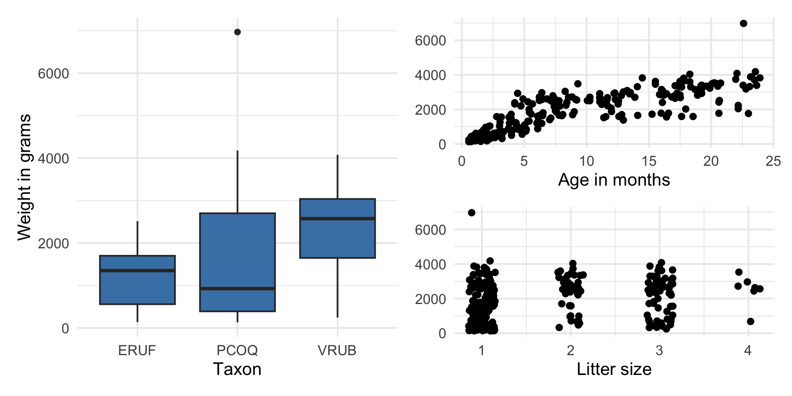
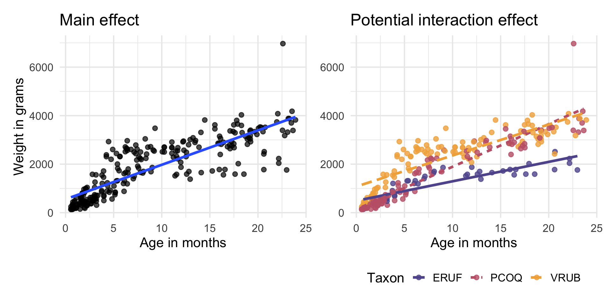
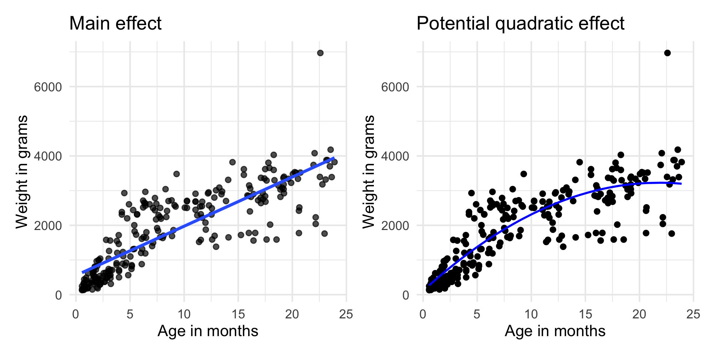

# load packages
library(tidyverse)
library(tidymodels)
library(openintro)
library(patchwork)
library(knitr)
library(kableExtra)
library(PNWColors) # for color palette
# set default theme and larger font size for ggplot2
ggplot2::theme_set(ggplot2::theme_minimal(base_size = 16))Multiple linear regression
Interactions + Model comparison
Announcements
(Optional) Submit team request by Thursday, September 17 at 11:59pm: https://forms.cloud.microsoft/r/Ae2NGSwP2N
3 - 4 students per team.
Must be enrolled in the same lab section.
Topics
Interaction terms
Higher order terms
Model comparison
Computing setup
Data: Lemurs
Today’s data contains a subset of the original Duke Lemur data set available in the TidyTuesday GitHub repo. This data includes information on 252 lemurs less than 24 months old from three taxa:
- Eulemur rufus (ERUF), commonly known as Red-fronted brown lemur
- Propithecus coquereli (PCOQ), commonly known as Coquerel’s sifaka
- Varecia rubra (VRUB), commonly known as Red ruffed lemur.
Variables
Predictors:
taxon: Code made as a combination of the lemur’s genus and species. Note that the genus is a broader categorization that includes lemurs from multiple species. (ERUF: Eulemur rufus,PCOQ: Propithecus coquereli,VRUB: Varecia rubra)age: Age of the lemur when weight was recorded (in months)litter_size: Total number of infants in the litter the lemur was born into (this includes the observed lemur)
Response: weight: Weight of the lemur (in grams)
Response vs. predictors

. . .
Goal: Use age, taxon, and litter size to understand variability in the weight of lemurs younger than 24 months old.
Model fit in R
lemur_fit <- lm(weight ~ age + taxon + litter_size,
data = lemurs)
tidy(lemur_fit) |>
kable(digits = 3)| term | estimate | std.error | statistic | p.value |
|---|---|---|---|---|
| (Intercept) | -0.772 | 116.993 | -0.007 | 0.995 |
| age | 137.479 | 4.845 | 28.377 | 0.000 |
| taxonPCOQ | 462.184 | 95.287 | 4.850 | 0.000 |
| taxonVRUB | 1020.390 | 133.468 | 7.645 | 0.000 |
| litter_size | -14.101 | 65.756 | -0.214 | 0.830 |
- Write the regression equation for ERUF lemurs.
- Write the regression equation for PCOQ lemurs.
Interaction effects
Growth rate by taxon
| term | estimate |
|---|---|
| (Intercept) | -0.772 |
| age | 137.479 |
| taxonPCOQ | 462.184 |
| taxonVRUB | 1020.390 |
| litter_size | -14.101 |
In the current model, the growth rate (effect of age) is the same for all observations
We wish to explore whether the growth rate differs by taxon
To do so, we will add an interaction effect between
ageandtaxon
EDA for interaction effect

How do we expect the lines to compare if there is no interaction effect? If there is an interaction effect?
Interaction terms
- Sometimes the relationship between a predictor variable and the response depends on the value of another predictor variable.
- This is an interaction effect.
- To account for this, we can include interaction terms in the model.
Your turn
We wish to fit model for weight using age, taxon, litter_size, and the interaction between age and taxon. What are the dimensions of the design matrix \(\mathbf{X}\)?
Model with interaction terms
lemur_fit_int <- lm(weight ~ age + taxon + litter_size + age * taxon,
data = lemurs)| term | estimate | std.error | statistic | p.value |
|---|---|---|---|---|
| (Intercept) | 529.072 | 130.926 | 4.041 | 0.000 |
| age | 79.974 | 9.915 | 8.066 | 0.000 |
| taxonPCOQ | -361.629 | 134.561 | -2.687 | 0.008 |
| taxonVRUB | 634.483 | 163.006 | 3.892 | 0.000 |
| litter_size | -32.108 | 58.649 | -0.547 | 0.585 |
| age:taxonPCOQ | 95.760 | 12.076 | 7.930 | 0.000 |
| age:taxonVRUB | 47.649 | 11.924 | 3.996 | 0.000 |
Model with interaction terms
Write the estimated regression equation for ERUF lemurs.
Write the estimated regression equation for PCOQ lemurs.
Interpreting interaction terms
Let’s look at the coefficient of age:taxonPCOQ = 95.760
- What the interaction means: The effect of age is 95.760 grams per month greater for PCOQ lemurs compared to the effect of age for ERUF lemurs.
- Interpreting
agefor PCOQ lemurs: For each additional month in a PCOQ lemur’s age, their weight is expected to be greater by 175.734 (79.974 + 95.760) grams, on average, holding litter size constant.- In short, the growth rate of young PCOQ lemurs is 175.734 grams per month.
Indicators and interactions
In general, how do
indicators for categorical predictors impact the model equation?
interaction terms impact the model equation?
Quadratic effects
Thus far, we have only considered models with first-order terms, in which the rate of change in the response is constant for all values of a predictor
We may consider instances in which the rate of change differs by values of the predictor
One way to account for this is by including a quadratic effect.
- Later in the semester, we will talk about other non-linear terms such as \(\log\).
Exploring potential quadratic effect

Add \(\text{age}^2\) to the model
lemur_fit_sq <- lm(weight ~ age + I(age^2) + taxon + litter_size,
data = lemurs)| term | estimate | std.error | statistic | p.value |
|---|---|---|---|---|
| (Intercept) | -446.466 | 119.823 | -3.726 | 0.000 |
| age | 268.050 | 17.407 | 15.399 | 0.000 |
| I(age^2) | -5.916 | 0.764 | -7.747 | 0.000 |
| taxonPCOQ | 506.279 | 85.796 | 5.901 | 0.000 |
| taxonVRUB | 943.648 | 120.318 | 7.843 | 0.000 |
| litter_size | 18.376 | 59.225 | 0.310 | 0.757 |
Interpreting age in quadratic model
- General interpretation: When age increases from \(a\) to \(b\), the weight is expected to change by \(\hat{\beta}_\text{age}(b - a) + \hat{\beta}_\text{age-sq}(b^2 - a^2)\) on average, holding all else constant.
- Expected change in weight:
- 1 month to 5 months: 930.216 (
268.050 * (5 - 1) + -5.916 * (5^2 - 1^2)) - 20 to 24 months: 30.984 (
(268.050 * (24 - 20) + -5.916 * (24^2 - 20^2))
- 1 month to 5 months: 930.216 (
Model comparison
Model evaluation: RMSE & \(R^2\)
Root mean square error, RMSE: A measure of the average error (average difference between observed and predicted values of the outcome)
R-squared, \(R^2\) : Percentage of variability in the outcome explained by the regression model
Comparing models
Let’s consider the following models:
| term | Model 1 | Model 2 |
|---|---|---|
| (Intercept) | -0.772 | 529.072 |
| age | 137.479 | 79.974 |
| taxonPCOQ | 462.184 | -361.629 |
| taxonVRUB | 1020.390 | 634.483 |
| litter_size | -14.101 | -32.108 |
| age:taxonPCOQ | NA | 95.760 |
| age:taxonVRUB | NA | 47.649 |
Comparing models
When comparing models, do we prefer the model with the lower or higher RMSE?
Though we use \(R^2\) to assess the model fit, it is generally unreliable for comparing models with different number of predictors. Why?
\(R^2\) will stay the same or increase as we add more variables to the model.
If we only use \(R^2\) to choose a best fit model, we will be prone to choose the model with the most predictor variables.
Adjusted \(R^2\)
- Adjusted \(R^2\): measure that includes a penalty for unnecessary predictor variables
- Similar to \(R^2\), it is a measure of the amount of variation in the response that is explained by the regression model
- Use the
glance()function to get \(Adj. R^2\) in R
glance(lemur_fit)$adj.r.squared[1] 0.7988424\(R^2\) and Adjusted \(R^2\)
\[R^2 = \frac{SSM}{SST} = 1 - \frac{SSR}{SST}\]
. . .
\[R^2_{adj} = 1 - \frac{SSR/(n-p-1)}{SST/(n-1)}\]
where
\(n\) is the number of observations used to fit the model
\(p\) is the number of non-intercept terms in the model
Using \(R^2\) and Adjusted \(R^2\)
- Adjusted \(R^2\) can be used as a quick assessment to compare the fit of multiple models; however, it should not be the only assessment
- Use \(R^2\) when describing the relationship between the response and predictor variables
Comparing models
Model 1
Model without interaction
# r-squared
glance(lemur_fit)$r.squared[1] 0.8020481# adj-r-squared
glance(lemur_fit)$adj.r.squared[1] 0.7988424Model 2
Model with interaction
# r-squared
glance(lemur_fit_int)$r.squared[1] 0.8443483# adj-r-squared
glance(lemur_fit_int)$adj.r.squared[1] 0.8405364Recap
- Interaction effects
- Quadratic effects
- Model comparison
Before next class
- Complete Lecture 08 prepare: Inference for regression